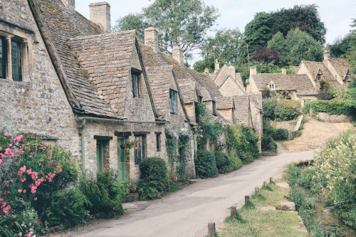
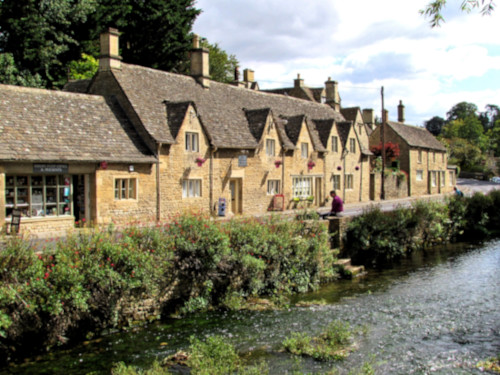
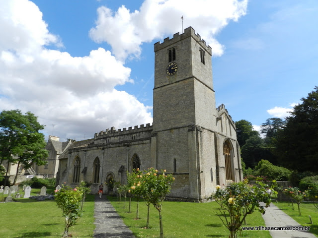

Bibury
Bibury é uma paróquia e aldeia do distrito de Cotswold, no condado de Gloucestershire, na Inglaterra. É um dos vilarejos mais visitados e um ponto imperdível em um roteiro por esta linda região.
Arlington Row
O vilarejo é um típico destino de "bate e volta" e seu principal ponto de interesse é a Arlington Row: um conjunto de casas, ou chalés, construídos nas famosas pedras de cotswolds - que dão o nome a esta região no interior inglês, localizada a aproximadamente duas horas de Londres.
Porém você pode ir muito além visitando chalés caprichados e mega charmosos! Confira os principais pontos túristicos de Bibury
Saint Mary's Church
A igreja de Saint Mary é conhecida como "saxônica" e tem os primórdios de sua história no século XII, quando havia uma abadia no local. Mais tarde, foi modificada, mas preserva características medievais e hoje é um edifício no mais alto grau de proteção de patrimônio histórico do Reino Unido (Grau I).
Ao redor da igreja, fica o cemitério. Uma das coisas mais típicas no interior da Inglaterra, são as igrejinhas rodeadas por lápides bem antigas!